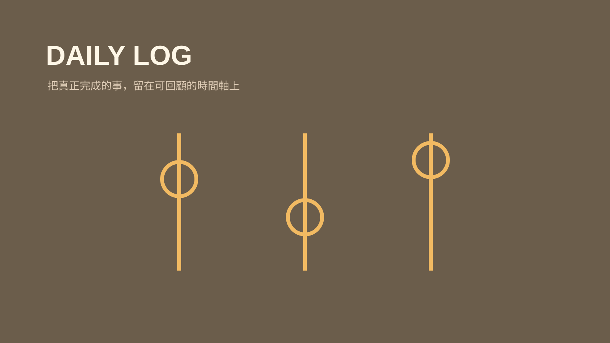

技能包 · 學習工具
協作日誌
2026.08 · 個人專案

FIG. 32 — 產品主畫面
關於這個作品
協作日誌將本次真正完成的工作與解決的困難，以固定格式插入每日紀錄的三省之前。它也會回看是否出現重複卻沒有工具支援的流程，將經驗轉化為下一個 Skill 的線索。
作品亮點
以固定格式記錄真實完成工作與難題
保持三省區塊固定在每日紀錄底部
不捏造未發生的成果或解法
透過 Skill 雷達發現值得制度化的重複流程